Désinformation, au-delà de la Fake NewsDisinformation, Beyond Fake News
Rappel : qu’est-ce qu’une Fake News ?Reminder: what is fake news?
▸ Fake News : information fausse.▸ Fake news: false information.
▸ Information contraire au réel et aux connaissances que nous en avons.▸ Information that contradicts reality and what we know about it.
▸ Généralement diffusée sur les médias et les réseaux sociaux.▸ Usually spread through the media and social networks.
▸ Généralement dans le but de désinformer.▸ Usually with the aim of misleading.
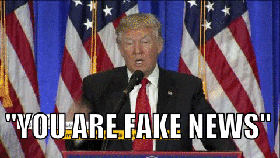
1) Quelles sont les questions à se poser ?1) What questions should we ask?
Quels sont les critères pour valider l'information ?What criteria help us validate information?
Fiabilité de la source.Reliability of the source.
Fiabilité de l'interlocuteur.Reliability of the speaker.
Niveau de preuves.Level of evidence.
Beaucoup de sources en parlent.Many sources report it.
Crédibilité de l'information.Credibility of the information.
Commentaires et critiques de l'information.Comments and criticism of the information.
Quels sont les critères pour valider l'information ?What criteria help us validate information?
11
Fiabilité de la sourceReliability of the source
22
Fiabilité de l'interlocuteurReliability of the speaker
33
Niveau de preuvesLevel of evidence
44
Plusieurs sources fiables en parlentSeveral reliable sources report it
55
Crédibilité de l'informationCredibility of the information
66
Commentaires et critiques de l'informationComments and criticism of the information
Mais attention…But be careful…
Vrai ou faux ? (1/7)True or false? (1/7)
Emmanuel Macron est président de la République.Emmanuel Macron is President of the Republic.
Vrai ou faux ? (2/7)True or false? (2/7)
Le plateau de Gizeh se trouve en Égypte.The Giza plateau is located in Egypt.
Vrai ou faux ? (3/7)True or false? (3/7)
Le président a rencontré un alien.The president met an alien.
Vrai ou faux ? (4/7)True or false? (4/7)
Le soleil est une étoile.The sun is a star.
Vrai ou faux ? (5/7)True or false? (5/7)
L'étoile du berger est une étoile.The "shepherd's star" is a star.
Vrai ou faux ?
Les chauves-souris sont aveugles.
Réponse : Faux. Elles voient, et complètent leur vue par l’écholocation.
Vrai ou faux ?
Les pieuvres ont trois cœurs.
Réponse : Vrai. Un cœur principal, et un pour chacune de leurs deux branchies.
Vrai ou faux ?
Le terme « sushi » désigne « poisson cru » en japonais.
Réponse : Faux. « Sushi » désigne le riz vinaigré. Le poisson cru, c’est le sashimi.
Vrai ou faux ?
L’eau tourbillonne dans un sens différent selon l’hémisphère (effet Coriolis).
Réponse : Faux à l’échelle d’un lavabo : la force de Coriolis y est négligeable devant la forme du bac et le mouvement initial de l’eau.
Vrai ou faux ?
Nous avons créé des chats fluorescents.
Réponse : Vrai. Des chats transgéniques fluorescents ont été produits en laboratoire, pour la recherche sur le sida félin.
Vrai ou faux ?
La mousse sur les arbres pousse toujours au nord.
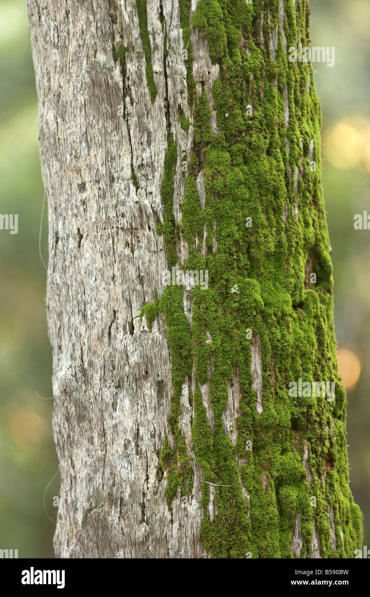
Réponse : Faux. Elle pousse du côté le plus humide, qui dépend du relief, du vent et de l’ombre.
Vrai ou faux ?
Les pyramides ont été construites par des extra-terrestres.
Réponse : Faux. Et c’est une théorie du complot de plein droit : elle suppose une dissimulation générale des égyptologues.
Vrai ou faux ?
Les pyramides ont été construites par des esclaves.
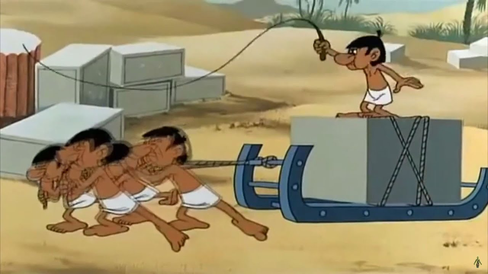
Réponse : Faux, au moins en partie : les fouilles montrent des ouvriers logés, nourris et soignés, pas des esclaves.
La Terre tourne autour du Soleil en 365 jours.
Réponse : Presque : 365,2422 jours. C’est pour cela qu’il existe des années bissextiles. « Vrai » et « faux » ne suffisent pas toujours.
La Terre est ronde.
Réponse : Presque : c’est un géoïde, légèrement aplati aux pôles. L’approximation est utile, mais c’est une approximation.
On ne peut pas respirer et avaler en même temps.
Réponse : Vrai chez l’adulte… mais faux chez le nourrisson, qui peut téter et respirer en même temps. Le contexte change la réponse.
Les chiens ne transpirent pas.
Réponse : Presque : ils transpirent très peu, par les coussinets. Ils se refroidissent surtout en haletant.
CritèresCriteria
– Fiabilité de la source.– Reliability of the source.
– Fiabilité de l’interlocuteur.– Reliability of the speaker.
– Niveau de preuves– Level of evidence
– Multiplicité des canaux de diffusion.– Multiple distribution channels.
– Crédibilité de l’information.– Credibility of the information.
– Commentaires et critiques de l’information.– Comments and criticism of the information.
Limite du conceptA limit of the concept
▸ Inclut les canulars (Gorafi)▸ Includes hoaxes (Le Gorafi)
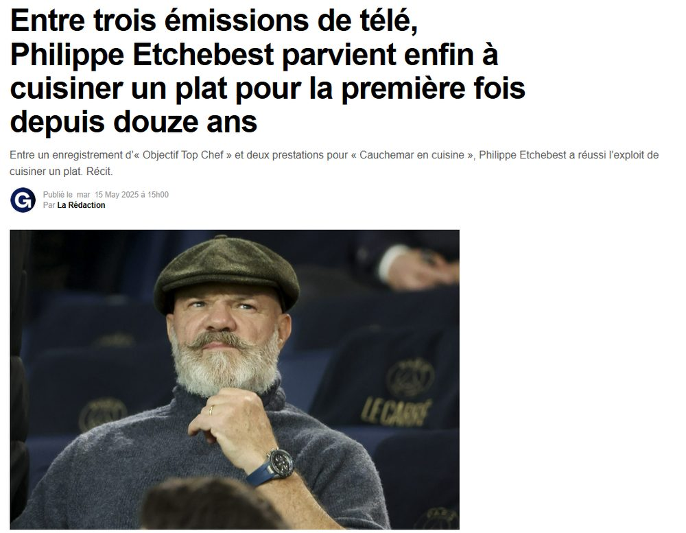
Différentes Fake NewsDifferent kinds of fake news
▸ Mésinformation▸ Misinformation
▹ Une infox que l’on partage mais que l’on croit vraie.▹ Fake news we share while believing it is true.
▸ Désinformation▸ Disinformation
▹ Une infox que l’on partage et que l’on sait fausse.▹ Fake news we share while knowing it is false.
Informations fallacieuses (misleading news)Misleading information (misleading news)
▸ Sont beaucoup moins facilement identifiables qu’une “Fake News” pure et dure.▸ Are much harder to identify than outright “fake news”.
▸ Sont beaucoup plus partagées par les médias.▸ Are shared far more widely by the media.
Limite du conceptA limit of the concept
▸ Inclut les canulars (Gorafi)▸ Includes hoaxes (Le Gorafi)
▸ Distinction floue entre la Fake news volontaire (désinformation) et involontaire (mésinformation).▸ A blurred line between deliberate fake news (disinformation) and unintentional fake news (misinformation).
▸ Néglige tout le continuum possible de désinformation (« misleading news »).▸ Ignores the whole possible continuum of disinformation (“misleading news”).
Fake NewsFake news
Véritable informationGenuine information
ContinuumContinuum
ConclusionConclusion
▸ 1) Aucune source n’est à 100% fiable▸ 1) No source is 100% reliable
▸ 2) La « Fake News » est un concept flou.▸ 2) “Fake news” is a blurry concept.
▸ 3) Elle dépend du contexte.▸ 3) It depends on the context.
Désinformer SANS Fake NewsMisleading WITHOUT fake news
Le biais de cadrageFraming bias
PPatriote Éveillé@eveil_patriote · 2 h···
"Dans le métro, ce migrant refuse que des blancs rentrent dans le même wagon que lui !! C’est bizarre, on nous a toujours dit que le racisme anti-blancs n’existait pas !""On the subway, this migrant refuses to let white people into the same carriage as him!! Weird, we were always told anti-white racism didn’t exist!"
💬🔁♡📊
FLe Fil Métro@lefilmetro · 3 h···
À Lille, un homme frappait sa femme dans le métro. Un passager, témoin de la scène, lui a demandé à plusieurs reprises de cesser. À l’arrêt suivant, le passager a pris l’initiative de faire sortir l’homme du train pour protéger la femme.In Lille, a man was hitting his wife on the subway. A passenger who witnessed the scene repeatedly asked him to stop. At the next stop, the passenger took it upon himself to get the man off the train to protect the woman.
💬🔁♡📊
IInfo Sans Filtre@infosansfiltre · 1 h···
C'est arrivé dans un métro ce matin. Un homme migrant a jeté un couple de personnes âgées qui étaient entrées dans le même wagon que lui. Il ne supportait pas la présence de personnes blanches dans la même zone que lui. Ce genre de phénomène se répète de plus en plus dans le métro. Les témoignages affluent.It happened on the metro this morning. A migrant man threw out an elderly couple who had entered the same carriage as him. He couldn't stand the presence of white people in the same area as him. This kind of thing is happening more and more on the metro. Testimonies are pouring in.
💬🔁♡📊
JJustice pour elles@justicepourelles · 45 min···
Bien fait pour ce vieux qui frappait sa femme ! Le jeune homme lui a adressé une bonne leçon en le balançant sur le quai ! Malheureusement, il a attrapé sa femme avec lui, mais c'est comme ça qu'on traite les agresseurs de femmes !Serves that old man right for hitting his wife! The young man taught him a good lesson by throwing him onto the platform! Unfortunately he dragged his wife with him, but that's how you deal with men who attack women!
💬🔁♡📊
En haut à gauche : faux, émotionnel et raciste. En haut à droite : vrai, factuel (Lille). En bas à gauche : tout aussi faux et raciste, mais sur un ton factuel, sans émotion. En bas à droite : joue sur l'émotion, mais raconte le fait vrai. Les quatre comptes sont inventés.
« Dégradations » ≠ « Médiatisation des dégradations »“Damage” ≠ “Media coverage of damage”
Le même chiffre, retournéThe same figure, flipped
Un tweet, deux versions du même sondageOne tweet, two versions of the same poll
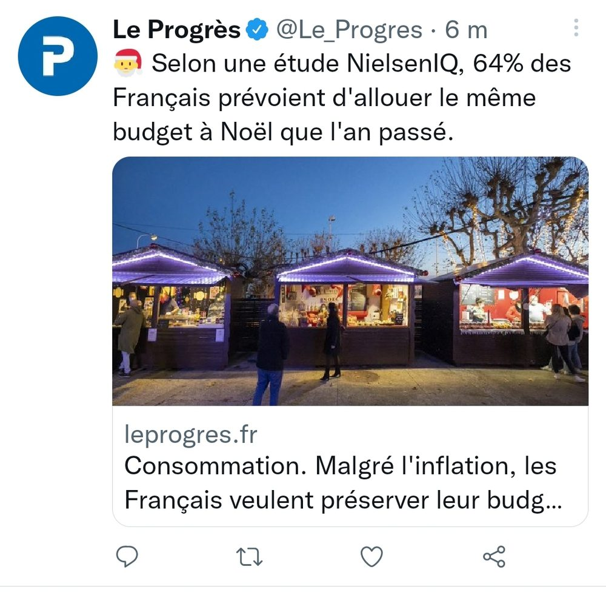
Selon une étude NielsenIQ, des Français prévoient budget à Noël l'an passé.
Consommation. l'inflation, Français leur budg...
Il est possible de désinformer SANS fake news mais en CITANT des Fake News.It is possible to mislead WITHOUT fake news, but by CITING fake news.
« Devriez-vous recevoir les vaccins contre la COVID et la grippe en même temps ? » De nouvelles recherches suggèrent qu’il pourrait être bénéfique de les faire ensemble, mais certains médecins appellent à la prudence.“Should you get the COVID and flu vaccines at the same time?” New research suggests it may be beneficial to double up, but some doctors urge caution.
Google
FoxNewsvaccinsFoxNewsvaccines
Fox Newshttps://www.foxnews.com › health
Devriez-vous recevoir les vaccins contre la COVID et la grippe en même temps ?Should you get the COVID and flu vaccines at the same time?
Il y a 2 jours — De nouvelles recherches suggèrent qu’il pourrait être bénéfique de les faire ensemble, mais certains médecins appellent à la prudence. Par Melissa Rudy, Fox News. Publié le 16 novembre 2023 à 6h : ...2 days ago — New research suggests it may be beneficial to double up, but some doctors urge caution. By Melissa Rudy Fox News. Published November 16, 2023 6: ...
Fox Newshttps://www.foxnews.com › health
Les taux de vaccination contre la COVID et la grippe diminuent chez les professionnels de santé américains ...COVID and flu vaccine rates are declining for US health ...
De moins en moins de travailleurs de la santé aux États-Unis se tiennent à jour concernant leurs vaccinations contre la COVID-19 et la grippe, selon deux rapports distincts publiés cette semaine ...Fewer U.S. health care workers are keeping up to date on their COVID-19 and flu vaccinations, according to two separate reports this week ...
Fox Newshttps://www.foxnews.com › health
Un sondage sur le vaccin contre la COVID révèle que plus de la moitié des adultes sont susceptibles de ne pas se faire vacciner ...COVID vaccine poll finds more than half of adults are likely ...
1er oct. 2023 — Parmi les adultes américains, 52 % déclarent qu’ils ne se feront « probablement » ou « certainement » pas administrer le nouveau vaccin contre la COVID-19, selon le sondage KFF COVID-19 Vaccine Monitor.Oct 1, 2023 — Among U.S. adults, 52% will “probably” or “definitely” not get the new COVID-19 vaccine, according to the KFF COVID-19 Vaccine Monitor poll.
Fox Newshttps://www.foxnews.com › health
Vaccins contre la COVID mis à jour : la FDA annonce une autorisation d’urgence ...Updated COVID vaccines: FDA announces emergency ...
11 sept. 2023 — Selon l’annonce de lundi, « les vaccins bivalents Moderna et Pfizer-BioNTech contre la COVID-19 ne sont plus autorisés pour une utilisation aux États-Unis, » ...Sep 11, 2023 — With Monday’s announcement, “the bivalent Moderna and Pfizer-BioNTech COVID-19 vaccines are no longer authorized for use in the United States,” ...
Google
Fox News vaccinsFox News vaccines
Fox Newshttps://www.foxnews.com › health
Le vaccin COVID qui vient d’être approuvé devrait être évité par les Floridiens…COVID vaccine just approved should be skipped by Florida ...
17 sept. 2023 — Les « Floridiens en bonne santé » ne devraient pas être des « cobayes », déclare le gouverneur, alors que la FDA et le CDC approuvent et recommandent un nouveau vaccin. Par Melissa Rudy, Fox News.Sep 17, 2023 — ‘Healthy Floridians’ should not be ‘guinea pigs,’ says governor, as FDA and CDC approve, recommend new vax. By Melissa Rudy Fox News.
Fox Newshttps://www.foxnews.com › health
La nouvelle promotion du vaccin COVID est « anti-humaine », déclare le chirurgien général de Floride…New COVID vaccine push is ‘anti-human,’ says Florida ...
3 oct. 2023 — La nouvelle promotion du vaccin COVID est « anti-humaine », affirme le chirurgien général de Floride : « Problème majeur de sécurité ». Le Dr Joseph Ladapo a déclaré à Fox News Digital qu’il…Oct 3, 2023 — New COVID vaccine push is ‘anti-human,’ says Florida surgeon general: ‘Major safety concern’. Dr. Joseph Ladapo told Fox News Digital he would ...
Fox Newshttps://www.foxnews.com › health
Encore un autre vaccin COVID ? Alors que Biden réclame un nouveau…Yet another COVID vaccine? As Biden calls for new ...
29 août 2023 — À la suite des déclarations du président Biden vendredi indiquant qu’il prévoit de demander un financement pour un nouveau vaccin COVID amid rising cases, des médecins réagissent…Aug 29, 2023 — Following President Biden’s Friday remarks that he plans to request funding for a new COVID vaccine amid rising cases, doctors sound off on ...
Fox Newshttps://www.foxnews.com › health
Quel bras devriez-vous utiliser pour le vaccin COVID et…Which arm should you use for the COVID vaccine and ...
Cela compte vraiment, suggère une étude. Voici pourquoi un choix pourrait déclencher une « réponse immunitaire plus forte » que l’autre. Par Melissa Rudy, Fox News.It really does matter, study suggests. Here’s why one choice may trigger a ‘stronger immune response’ than the other. By Melissa Rudy Fox News.
Les autres manières de désinformerOther ways to mislead
3 - Les autres manières de désinformer3 - Other ways to mislead
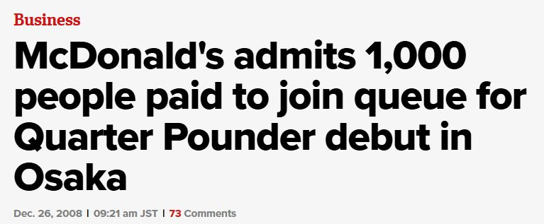
Lloyd Bentsen[2] in 1985 sénateur Texan
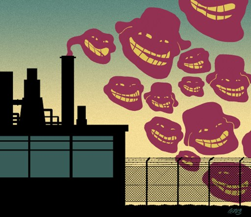
L’AstroturfingAstroturfing
▸ L’astroturfing est une technique consistant à simuler un mouvement spontané ou populaire à des fins politiques ou économiques dans le but d’influencer l’opinion publique.▸ Astroturfing is a technique that fakes a spontaneous or grassroots movement for political or economic ends, in order to influence public opinion.
C'est le sénateur du Texas Lloyd Bentsen qui utilise le terme astroturfing pour la première fois en 1986. Il raconte que de nombreux courriers qui lui sont prétendument envoyés par des citoyens sont en réalité une campagne de lobbying d'une compagnie d'assurance5.
L'origine du terme astroturfing fait référence à la pelouse artificielle de marque AstroTurf (en) utilisée dans les stades. C'est un jeu de mots sur l'expression « grassroots movement » en anglais américain. Grassroots, qui signifie littéralement « racine de l'herbe », exprime l'idée d'authenticité, d'ancrage dans le peuple. Ainsi la référence à une pelouse synthétique dénonce par analogie l'artificialité de ces pseudo mouvements citoyens.
C’est du militantisme mensongé.
La fabrique du douteThe manufacture of doubt
Une technique à l’origine employée par les industriels pour noyer le poisson sur leurs activités mais pas seulement… Elle plaît beaucoup en politique également.A technique originally used by industry to muddy the waters about its activities, but not only… It is also very popular in politics.
Le tabac comme habitude cool :
Connaissance des risques du tabac : caché. Négation.
Lobbying ET soft power auprès des jeunes.
La fabrique du douteThe manufacture of doubt
InvasionInvasion
Libération du peupleLiberation of the people
Attaque d’un pays souverainAttack on a sovereign country
Historiquement nous sommes le même paysHistorically we are the same country
Premiers à attaquerFirst to attack
Légitime défenseSelf-defence
Contre narratifCounter-narrative
Russia: Denial of human rights abuses.
https://www.politico.eu/article/russia-ukraine-disinformation-nato-united-states-special-forces-winter-olympics-moscow-kremlin-kyiv/
NATO will supposedly attack Russia at the upcoming Winter Olympics.
https://news-front.info/2022/01/14/ukraina-gotovit-vooruzhennuyu-provokatsiyu-v-donbasse-vo-vremya-olimpiady-dmitriy-solonnikov/
Debate around RT, Russia Today.
La Mute NewsMute News
Ne PAS parler de certaines informations, ou PEU parler de certaines informations.NOT talking about certain information, or talking about it only a LITTLE.
La Mute NewsMute News
Plus de 17 000civils tués, et des centaines de milliers de soldatsOver 17,000civilians killed, and hundreds of thousands of soldiers
Plus de 74 000mortsOver 74,000dead
Au moins 59 000morts recensésAt least 59,000recorded deaths
Bilans au 19 octobre 2026, ils varient selon les sources. Ukraine : plus de 17 000 civils tués selon l'ONU (commission d'enquête, sept. 2026, minimum vérifié, sous-estimé dans les zones occupées) ; militaires : estimations d'environ 500 000 morts côté russe et 100 000 à 150 000 côté ukrainien (CSIS, Cavoli), invérifiables. https://www.russiamatters.org/news/russia-ukraine-war-report-card/russia-ukraine-war-report-card-oct-14-2026 Gaza : 74 475 morts au 18/10/2026 selon le ministère de la Santé de Gaza (civils et combattants, sans les disparus ni les morts indirects), « au moins 74 000 » selon Al Jazeera le 7/10/2026 https://www.aljazeera.com/news/2026/10/7/three-years-of-israels-genocide-in-gaza-in-numbers Soudan : au moins 59 000 morts violentes recensées par ACLED (AP, correction du 10/10/2026 : « 59 000, et non 150 000 ») https://www.ksat.com/news/world/2026/10/10/correction-sudan-story/ ; la faim et les maladies ne sont pas comptées, PRIO/Uppsala estiment environ 80 000 morts pour la seule année 2025.
L’usage politique de la désinformationThe political use of disinformation
Les croix de DavidThe Stars of David
31 oct. 202331 Oct 2023
Nov. 2023Nov 2023
23 fév. 202423 Feb 2024
Le Parisien · 31 oct. 2023« Effroi », « honte » : à Paris, des étoiles de David taguées sur les murs d’habitations et de commerces
La Dépêche · 31 oct. 2023Antisémitisme : à Paris, près de 60 étoiles de David taguées dans les rues du XIVe arrondissement
Le Monde · 31 oct. 2023Des étoiles de David taguées en Ile-de-France : enquête ouverte, Elisabeth Borne dénonce des « agissements ignobles »
The Times of Israel · 31 oct. 2023À Paris, des étoiles de David taguées sur des immeubles
actu.fr · 1er nov. 2023Étoiles de David taguées à Paris : « insulter le peuple juif ou en revendiquer l’appartenance ? »
BFMTV · 9 nov. 2023Le commanditaire présumé des tags d’étoiles de David affirme qu’il voulait « soutenir les juifs d’Europe »
La Tribune (Reuters) · 9 nov. 2023Etoiles de David taguées à Paris : la France condamne une « ingérence numérique » russe
actu.fr · 10 nov. 2023« Soutenir les juifs » : les étranges explications du commanditaire des tags d’étoiles de David
Le Figaro (avec AFP) · 23 fév. 2024Étoiles de David taguées à Paris : l’opération était pilotée par le FSB russe
RMC · 23 fév. 2024Tags d’étoiles de David : l’opération était pilotée par le FSB, les services secrets russes
Le Parisien · 23 fév. 2024Étoiles de David taguées en région parisienne : l’opération était pilotée par les services de sécurité russes
Ouest-France · 23 fév. 2024Étoiles de David taguées à Paris : une opération pilotée par le FSB, service de renseignement russe
Chronologie horizontale : à chaque flèche, le curseur avance d'une date et les articles de cette période montent. Titres relevés sur les sites le 17/11/2026.
31 oct. 2023 : Le Parisien https://www.leparisien.fr/paris-75/effroi-honte-a-paris-des-etoiles-de-david-taguees-sur-les-murs-dhabitations-et-de-commerces-31-10-2023-ARHLHRVAAFFR5LJFC7NCT264JA.php ; La Dépêche https://www.ladepeche.fr/2023/10/31/antisemitisme-a-paris-pres-de-60-etoiles-de-david-taguees-dans-les-rues-du-xive-arrondissement-11553202.php ; Le Monde https://www.lemonde.fr/societe/article/2023/10/31/le-parquet-de-paris-ouvre-une-enquete-apres-la-decouverte-d-etoiles-de-david-taguees-sur-des-immeubles_6197523_3224.html ; Times of Israel https://fr.timesofisrael.com/france-des-etoiles-de-david-taguees-a-paris-sur-des-immeubles/
Novembre 2023 : actu.fr https://actu.fr/ile-de-france/paris_75056/etoiles-de-david-taguees-a-paris-insulter-le-peuple-juif-ou-en-revendiquer-l-appartenance_60280856.html ; BFMTV https://www.bfmtv.com/police-justice/le-commanditaire-presume-des-tags-d-etoiles-de-david-affirme-qu-il-voulait-soutenir-les-juifs-d-europe_AV-202311090781.html ; La Tribune/Reuters https://www.latribune.fr/depeches/reuters/KBN32420I/etoiles-de-david-taguees-a-paris-la-france-condamne-une-ingerence-numerique-russe.html ; actu.fr https://actu.fr/ile-de-france/paris_75056/soutenir-les-juifs-les-etranges-explications-du-commanditaire-des-tags-d-etoiles-de-david_60316872.html . Le 9 novembre, le Quai d'Orsay parle déjà d'« ingérence numérique russe » (bots du réseau RRN) : la carte La Tribune le montre ; le FSB n'est nommé qu'en février.
23 fév. 2024 (Le Monde révèle la note de la DGSI le 22 au soir, reprise par l'AFP le 23) : Le Figaro/AFP ; RMC https://rmc.bfmtv.com/actualites/police-justice/faits-divers/tags-d-etoiles-de-david-l-operation-etait-pilotee-par-le-fsb-les-services-secrets-russes_AN-202402230625.html ; Le Parisien https://www.leparisien.fr/faits-divers/etoiles-de-david-taguees-en-region-parisienne-loperation-etait-pilotee-par-les-services-de-securite-russes-23-02-2024-R566XVXPYBCJPP2NBPZBPE4QGA.php ; Ouest-France https://www.ouest-france.fr/societe/antisemitisme/etoiles-de-david-taguees-a-paris-une-operation-pilotee-par-le-fsb-service-de-renseignement-russe-a457c278-d265-11ee-b1bc-6aaac57ff91a
Couverture médiatique (INA, La Revue des médias, 12/05/2025) : 255 mentions sur les chaînes info le seul 31 octobre, 480 en deux jours ; entre le 2 et le 15 novembre, 484 en tout. https://larevuedesmedias.ina.fr/etoiles-david-bleues-mains-rouges-medias-desinformation-manipulation-russie-ingerence
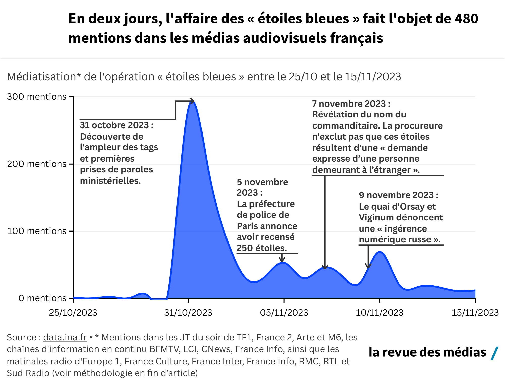
Graphique de l'INA, La Revue des médias, 12 mai 2025 : https://larevuedesmedias.ina.fr/etoiles-david-bleues-mains-rouges-medias-desinformation-manipulation-russie-ingerence
255 mentions sur les chaînes d'info le seul 31 octobre ; 480 mentions en deux jours (31 oct. et 1er nov.) ; entre le 2 et le 15 novembre, 484 mentions en tout, alors que le commanditaire, puis l'ingérence russe (9 novembre) sont révélés. Les JT du soir arrêtent d'en parler dès le 1er novembre (sauf France 2 le 8). Le graphique s'arrête au 15 novembre : la révélation du FSB (23 février 2024) n'y figure pas.
9 sept. 20259 Sep 2025
10 sept. 202510 Sep 2025
Fin sept. 2025Late Sep 2025
20262026
franceinfo · 9 sept. 2025Au moins neuf têtes de cochon ont été découvertes devant des mosquées en Ile-de-France
BFMTV · 9 sept. 2025« Une lâcheté insondable » : Bruno Retailleau fait part de son « indignation » après la découverte de têtes de cochon devant des mosquées
20 Minutes · 9 sept. 2025« L’islamophobie se déchaîne » à cause de Retailleau, accuse Mélenchon
Le Monde · 9 sept. 2025Des têtes de cochon devant plusieurs mosquées, « une nouvelle et triste étape dans la montée de la haine antimusulmane »
BFMTV · 10 sept. 2025Têtes de porc décapitées devant des mosquées : ingérence russe ou action coordonnée de l’ultradroite ?
RTL · 10 sept. 2025Têtes de cochon devant les mosquées : l’ingérence étrangère confirmée, plusieurs suspects en fuite
Le Monde · 27 sept. 2025Têtes de cochon devant des mosquées : l’enquête privilégie la piste du renseignement militaire russe
TF1 Info · 29 sept. 2025Têtes de cochon devant des mosquées d’Ile-de-France : 11 arrestations en Serbie
La Croix · 6 mars 2026Têtes de cochons devant des mosquées en France : trois Serbes condamnés dans leur pays
BFMTV · 20 mars 2026Têtes de cochon devant des mosquées, peinture verte sur des lieux juifs : comment les services secrets russes ont voulu déstabiliser la France
France 24 · 26 mai 2026Têtes de cochon, projets d’ingérence : ce que révèlent des documents sur les opérations russes en France
D'abord la photo ; à chaque flèche, le curseur avance d'une date et les articles de cette période montent. Titres relevés sur les sites le 17/11/2026.
9 sept. 2025 : franceinfo https://www.franceinfo.fr/france/ile-de-france/plusieurs-tetes-de-cochon-decouvertes-devant-des-mosquees-a-paris-et-en-banlieue-bruno-retailleau-denonce-un-acte-d-une-lachete-insondable_7482145.html ; BFMTV https://www.bfmtv.com/police-justice/une-lachete-insondable-bruno-retailleau-fait-part-de-son-indignation-apres-la-decouverte-de-tetes-de-cochon-devant-des-mosquees_AD-202509090508.html ; 20 Minutes https://www.20minutes.fr/politique/4172041-20250909-islamophobie-dechaine-cause-retailleau-accuse-melenchon-apres-decouverte-tetes-cochon ; Le Monde https://www.lemonde.fr/societe/article/2025/09/09/des-tetes-de-cochon-devant-plusieurs-mosquees-une-nouvelle-et-triste-etape-dans-la-montee-de-la-haine-antimusulmane_6640168_3224.html
10 sept. 2025 (le parquet annonce que les têtes ont été déposées par des étrangers repartis à l'étranger) : BFMTV https://www.bfmtv.com/police-justice/tetes-de-porc-decapitees-devant-des-mosquees-ingerence-russe-ou-action-coordonnee-de-l-ultradroite_AV-202509100390.html ; RTL https://www.rtl.fr/actu/justice-faits-divers/tetes-de-cochon-devant-les-mosquees-l-ingerence-etrangere-confirmee-plusieurs-suspects-en-fuite-7900539897
Fin sept. 2025 : Le Monde https://www.lemonde.fr/societe/article/2025/09/27/tetes-de-cochon-devant-des-mosquees-l-enquete-privilegie-la-piste-du-renseignement-militaire-russe_6643121_3224.html ; TF1 Info https://www.tf1info.fr/justice-faits-divers/tetes-de-cochon-devant-des-mosquees-d-ile-de-france-11-arrestations-en-serbie-annonce-l-interieur-2397545.html
2026 : La Croix https://www.la-croix.com/international/tetes-de-cochons-devant-des-mosquees-en-france-trois-serbes-condamnes-dans-leur-pays-20260306 ; BFMTV https://www.bfmtv.com/police-justice/info-bfmtv-tetes-de-cochon-devant-des-mosquees-peinture-verte-sur-des-lieux-juifs-comment-les-services-secrets-russes-ont-voulu-destabiliser-la-france_AN-202603200783.html ; France 24 https://www.france24.com/fr/france/20260526-t%C3%AAtes-de-cochon-projets-d-ing%C3%A9rence-ce-que-r%C3%A9v%C3%A8lent-des-documents-sur-les-op%C3%A9rations-russes-en-france . Les documents de la Social Design Agency (« Report on Operation Pig's Head ») ont été révélés par Le Monde et l'OCCRP le 24 mai 2026.
Des agents étrangers provoquent un incidentForeign agents provoke an incident
Politiciens et médias réagissentPoliticians and media react
Les médias sociaux réagissentSocial media react
Les fermes de troll augmentent ce phénomèneTroll farms amplify the phenomenon
Les médias sociaux augmentent les propos radicaux et polarisantsSocial media amplify radical, polarising rhetoric
La société devient davantage diviséeSociety becomes more divided
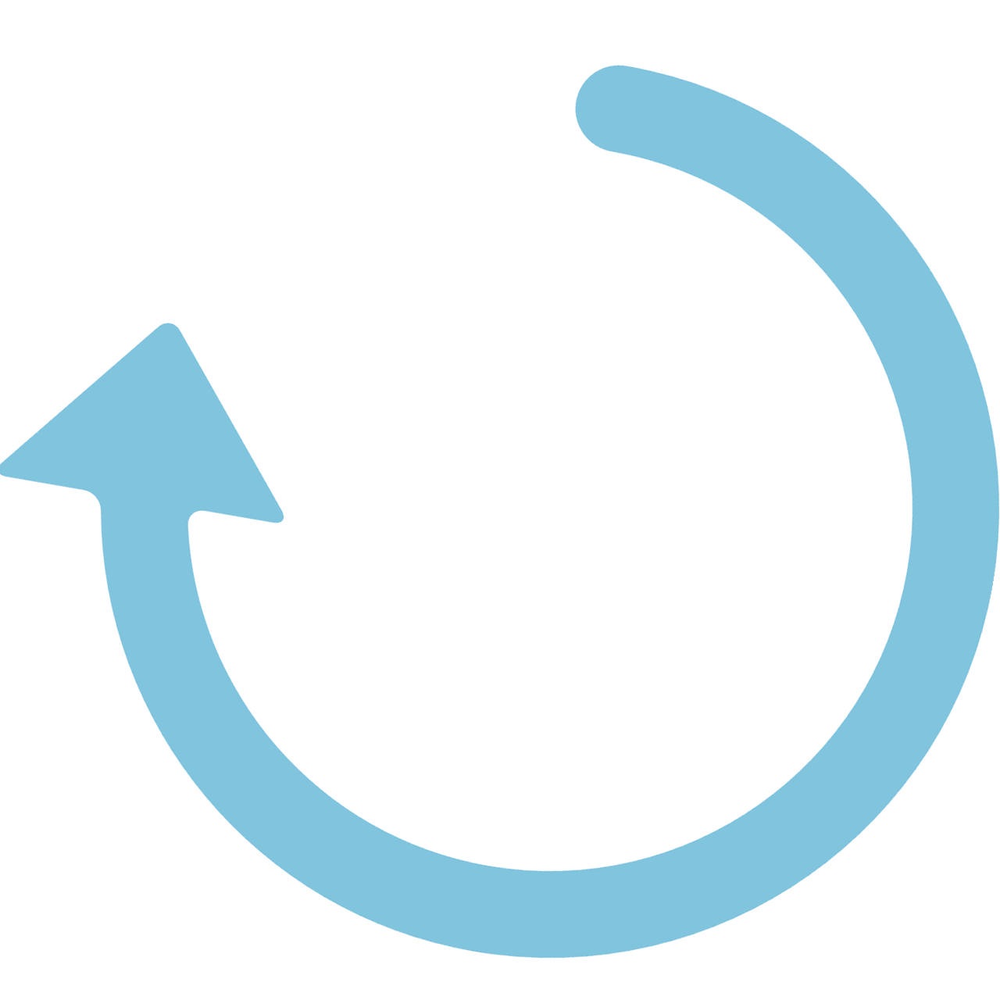
Paris, octobre 2023Île-de-France, septembre 2025
« Agissements ignobles »
Élisabeth Borne, Première ministre, 31 oct. 2023
« L'antisémitisme est plus que jamais présent et nous ramène aux heures les plus sombres de l'histoire de France. »
CRIF, 31 oct. 2023
« Un acte d'une lâcheté insondable »
Bruno Retailleau, ministre de l'Intérieur, 9 sept. 2025
« Nouvelle et triste étape dans la montée de la haine antimusulmane »
Chems-Eddine Hafiz, recteur de la Grande Mosquée de Paris, 9 sept. 2025
CCarine Petit@CarinePetit14 · 31 oct. 2023
Cet acte de marquage rappelle les procédés des années 1930 et la Seconde Guerre mondiale.
KKarim Bouamrane@KBouamrane · 31 oct. 2023
Les auteurs devront être poursuivis et sanctionnés par la justice avec la plus grande sévérité.
VValérie Pécresse@vpecresse · 9 sept. 2025
À nos concitoyens musulmans, je veux dire mon soutien […] La République doit protéger les croyants devant les profanations de leurs lieux de cultes qui se multiplient !
JJean-Luc Mélenchon@JLMelenchon · 9 sept. 2025
L'islamophobie se déchaîne en France […] chauffée à blanc par le soutien à Netanyahu et les saillies du ministre de l'intérieur.
211 543contenus haineux signalés à Pharos en 2023, une hausse due à 90 % à l'antisémitisme
1 676actes antisémites en 2023, soit +284 %
326actes antimusulmans en 2025, soit +88 %
25dépôts de carcasses de porc en 2025, soit +317 %
1 095 botsdu réseau russe RRN ont publié 2 589 posts sur X
48 hd'avance : les bots publient les photos des étoiles avant tout le monde
255mentions de l'affaire sur BFMTV et CNews le seul 31 octobre 2023
« Opération tête de cochon »rapport interne d'une agence de propagande russe, révélé en 2026
73 %des Français sont préoccupés par l'antisémitisme
61 %des Français sont préoccupés par l'islamophobie
34 %seulement jugent la France sûre pour les musulmans, environ 50 % pour les Juifs
8 sur 10musulmans jugent la haine antimusulmane répandue et en hausse
Cercle de la polarisation : cliquer sur une case estompe les autres et montre ses exemples ; recliquer pour revenir. 1. Étoiles de David (oct. 2023, opération pilotée par le FSB) ; têtes de cochon devant 9 mosquées d'Île-de-France (nuit du 8 au 9/09/2025, 3 Serbes condamnés en mars 2026, « Report on Operation Pig's Head » de la Social Design Agency russe révélé par OCCRP/Le Monde le 24/05/2026 https://www.occrp.org/en/investigation/leaked-documents-reveal-russian-cognitive-strikes-against-the-west-including-islamophobic-pig-head-attacks-in-paris ). 2. Borne, CRIF : https://fr.timesofisrael.com/france-des-etoiles-de-david-taguees-a-paris-sur-des-immeubles/ ; Retailleau : https://www.blick.ch/fr/monde/france/france-les-tetes-de-cochon-devant-les-mosquees-choquent-id21214115.html ; Hafiz : https://www.tsa-algerie.com/mosquees-profanees-en-france-retailleau-et-lextreme-droite-mis-en-cause/ 3. Posts X reconstitués d'après leur texte : Carine Petit et Karim Bouamrane (Times of Israel, URL ci-dessus) ; Pécresse https://x.com/vpecresse/status/1965350404075769890 ; Mélenchon https://actu.orange.fr/france/tetes-de-cochon-devant-des-mosquees-une-islamophobie-qui-se-dechaine-jean-luc-melenchon-accable-bruno-retailleau-magic-CNT000002kyyJ7.html . Rien de fiable trouvé sur Instagram ou TikTok. 4. Aucune source ne cite de messages haineux précis sur ces deux affaires : ce sont donc des chiffres. Pharos et actes antisémites 2023 : https://fr.timesofisrael.com/forte-hausse-des-contenus-antisemites-en-ligne-en-france/ ; actes antimusulmans 2025 (ministère de l'Intérieur, 29/05/2026) : https://www.euronews.com/2026/05/29/france-sees-as-sharp-rise-in-anti-jewish-anti-christian-and-anti-muslim-acts-says-governme 5. Viginum via AP/PBS (10/11/2023) https://www.pbs.org/newshour/world/france-blames-russia-for-an-online-effort-to-whip-up-controversy-over-stars-of-david-graffiti ; INA via Next https://next.ink/184196/etoiles-bleues-de-david-cette-operation-dingerence-russe-qui-a-vraiment-marche/ ; SDA : https://next.ink/239154/tetes-de-cochon-mosquees-les-documents-qui-eclairent-la-frappe-cognitive-russe/ 6. Destin Commun (sept. 2024) https://www.publicsenat.fr/actualites/societe/7-octobre-un-an-apres-73-des-francais-sont-preoccupes-par-lantisemitisme-et-61-par-lislamophobie-selon-un-sondage ; Ifop pour la Grande Mosquée de Paris (sept. 2025) https://www.politis.fr/articles/2025/09/une-etude-dampleur-sur-lislamophobie-revele-langoisse-des-musulman%c2%b7es-en-france/
Attaque terroristeTerrorist attack
Politiciens et médias réagissentPoliticians and media react
Les médias sociaux réagissentSocial media react
Les fermes de troll augmentent ce phénomèneTroll farms amplify the phenomenon
Les médias sociaux augmentent les propos radicaux et polarisantsSocial media amplify radical, polarising rhetoric
La société devient davantage diviséeSociety becomes more divided
Manifestations nationalesNationwide protests
Politiciens et médias réagissentPoliticians and media react
Les médias sociaux réagissentSocial media react
Les fermes de troll augmentent ce phénomèneTroll farms amplify the phenomenon
Les médias sociaux augmentent les propos radicaux et polarisantsSocial media amplify radical, polarising rhetoric
La société devient davantage diviséeSociety becomes more divided
Complot ou pas ?Conspiracy or not?
Les théories du complot comme argument rhétoriqueConspiracy theories as a rhetorical device
https://www.bbc.com/news/60711705
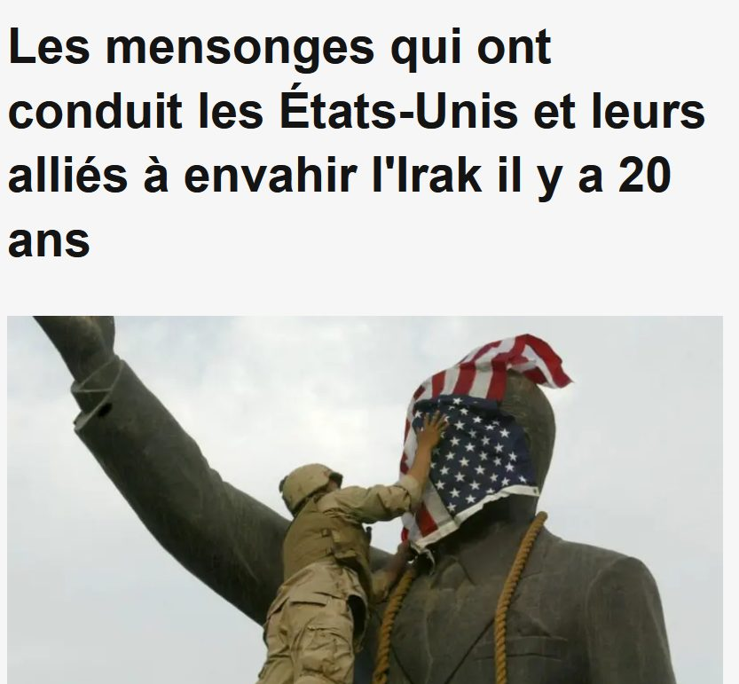
▸ Théorie du complot d’origine Russe de 1990 qui imagine que les occidentaux souhaitent accaparer l’ensemble de la richesse du globe pour uniquement un milliard d’individus.▸ A Russian conspiracy theory from 1990 imagining that Westerners want to hoard all of the world’s wealth for just one billion people.
▸ Comme souvent, il y a un fond de vrai (si le monde entier vivait comme les occidentaux, il n’y aurait plus assez de ressources).▸ As is often the case, there is a grain of truth (if the whole world lived like Westerners, there would not be enough resources).
▸ MAIS cela est extrapolé jusqu’à imaginer une agentivité consciente des occidentaux pour s’accaparer l’ensemble des richesses du globe VOIRE veulent réduire en esclavage ou tuer le reste de la population.▸ BUT this is stretched to the point of imagining a conscious intent by Westerners to seize all of the world’s wealth, or EVEN to enslave or kill the rest of the population.
Conséquence politique de cette théorie du complot :Political consequence of this conspiracy theory:
L’impact de l’information, même vraieThe impact of information, even when true
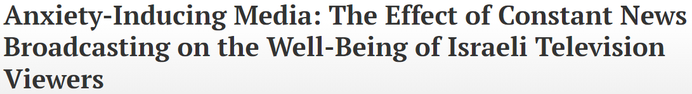
- L’exposition à des nouvelles angoissantes accroît le temps passé devant les informations.- Exposure to distressing news increases the time spent watching the news.
- Les personnes davantage exposées à ces nouvelles angoissantes montrent des symptômes d’anxiété plus importants.- People more exposed to this distressing news show greater anxiety symptoms.
Le bilan, les jeux, et votre retourSummary, games, and your feedback
Scannez ce QR code : vous pourrez donner votre retour, revoir le bilan de la formation ou rejouer aux jeux.Scan this QR code: you can leave your feedback, review the session summary, or play the games again.


![QR code vers la page antoninatger.github.io/interventions/retours]() antoninatger.github.io/interventions/retours →antoninatger.github.io/interventions/retours →
antoninatger.github.io/interventions/retours →antoninatger.github.io/interventions/retours →